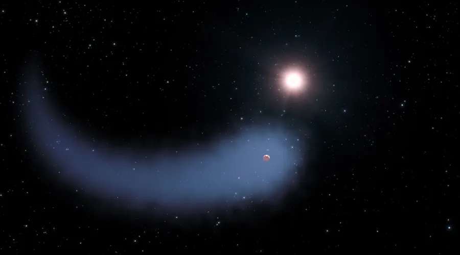

June 24, 2015
Gliese 436 b: a planet with a comet-like hydrogen tail
Hubble observations in ultraviolet light show that the Neptune-sized planet Gliese 436 b is losing an immense cloud of hydrogen. The gaseous tail is about 50 times the size of the star, a faint red dwarf about 30 light-years away.
The cause is the radiation from the star, which makes hydrogen evaporate from the atmosphere. This does not currently threaten the planet; the team estimates that it may have lost up to 10 percent of its atmosphere so far. The process could explain how hot super-Earths form.
Source: ESA/Hubble: "Hubble sees atmosphere being stripped from Neptune-sized exoplanet.", 2015-06-24